D'abord vous créez le compte (5 minutes). Ensuite l'assistant virtuel vous conduit étape par étape dans la mise en route (10 minutes). Puis trois gestes utiles au quotidien. Les informations complémentaires, à la fin, sont facultatives.
ACréer le compteVotre société et son secteur, vous, la formule, l'email, la validation.
1Votre façon de travaillerCinq questions : DivaWaste n'affiche que ce que vous utilisez.
2Votre site et ses zonesL'usine, ses ateliers et l'aire de stockage des déchets.
3Vos types de déchetsActivés en un clic dans le catalogue, avec leur code.
4Votre prestataireCelui qui vient chercher vos déchets.
CLes ParamètresOù retrouver et changer tous vos réglages.
DImporter vos lots depuis ExcelVotre registre entre d'un coup dans DivaWaste.
EMettre un lot en BourseVendre vos chutes valorisables aux prestataires.
+Informations complémentairesPrestataire sans compte · contrat · limites d'une zone.
✓Fiche de testCochez ce qui marche, notez ce qui gêne.
Comment lire ce guide. Chaque étape dit quoi faire, montre l'écran — l'élément à cliquer est entouré en rouge — puis, dans un encadré vert, ce que vous devez voir. Si ce n'est pas le cas, notez-le sur la fiche de test.
L'assistant virtuel, votre guide. En haut de chaque page, sa carte vous dit à quelle étape vous êtes (« Étape 2 sur 7 »), pourquoi elle compte, et vous donne un seul bouton pour la faire. Une étape finie s'affiche en vert. Vous pouvez aussi lui écrire : bouton Assistant en haut de l'écran (ou Ctrl + J).
DivaWaste · Guide 1 — Créer votre compte
A. Créer le compte
A1Ouvrez la page d'inscription
Ouvrez DivaWaste dans votre navigateur et cliquez sur Créer un compte.
En haut, gardez Industriel (usine, atelier, exploitation) : vous produisez des déchets. « Prestataire » est pour les collecteurs, recycleurs et transporteurs.
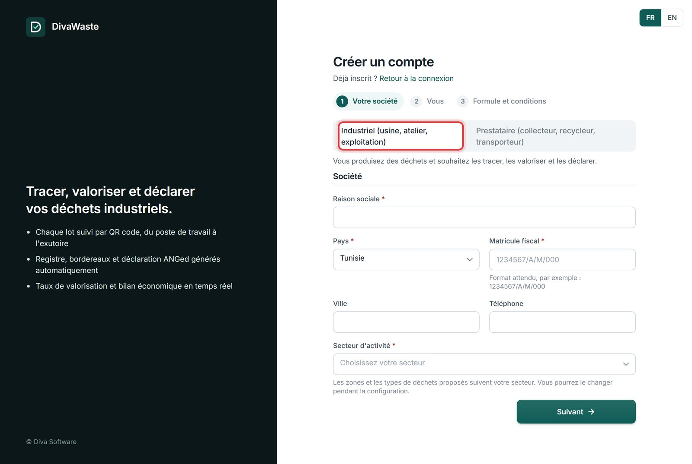
A2Votre société et son secteur
Raison sociale : le nom officiel de la société.
Pays puis Matricule fiscal — respectez le format montré sous le champ (en Tunisie : 1234567/A/M/000).
Ville et Téléphone (facultatifs).
DivaWaste · Guide 1 — Créer votre compte
Secteur d'activité : ouvrez la liste et choisissez ce que fait votre usine (ici : Textile et habillement). Les zones et les déchets proposés plus tard suivent ce choix.
Textile seulement : Vos métiers du textile (facultatif) — ici : Confection.
Cliquez sur Suivant.
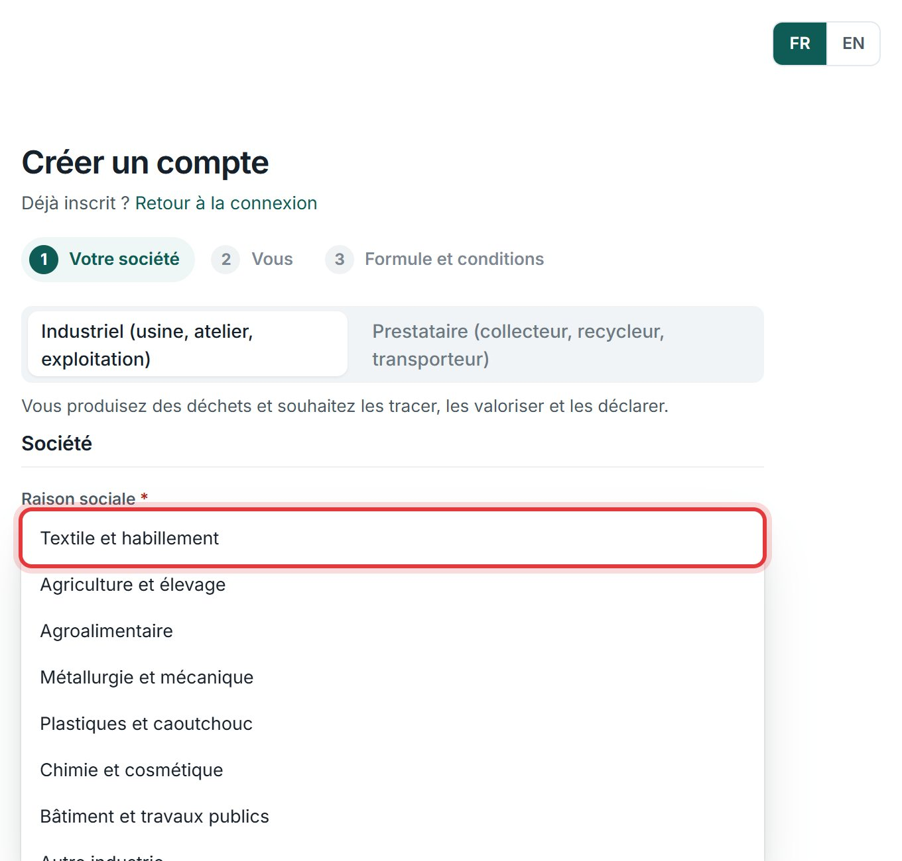
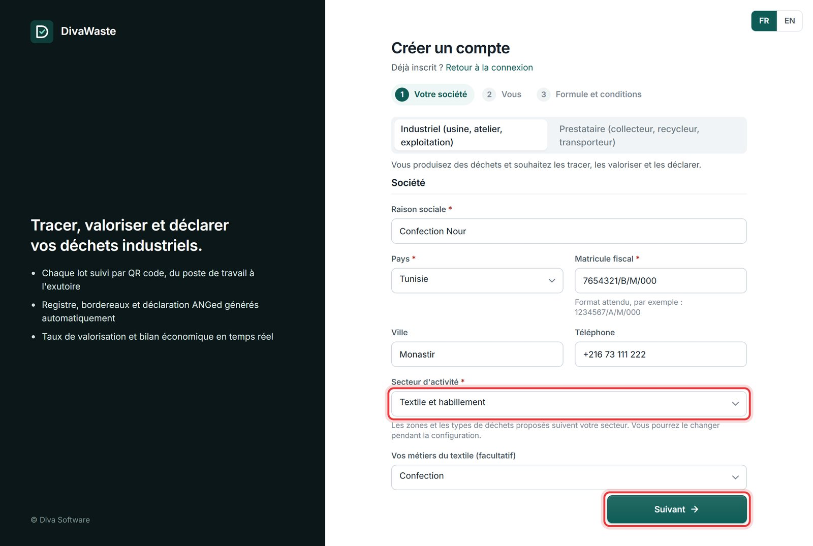
À gauche : la liste des secteurs. À droite : la société remplie, prête pour « Suivant ».
✔ Vous devez voir l'étape « 1 Votre société » cochée et l'étape « 2 Vous » ouverte. Un champ en rouge « Ce champ est obligatoire » ? Il reste à le remplir.
Pas sûr du secteur ? Choisissez le plus proche : vous pourrez le changer pendant la mise en route (étape 1).
A3Vous
Prénom, Nom, Téléphone.
Adresse email : la vôtre. Elle sert à vous connecter et à recevoir le lien de confirmation.
Mot de passe : au moins 12 caractères, avec au moins une lettre et un chiffre. Puis Suivant.
DivaWaste · Guide 1 — Créer votre compte
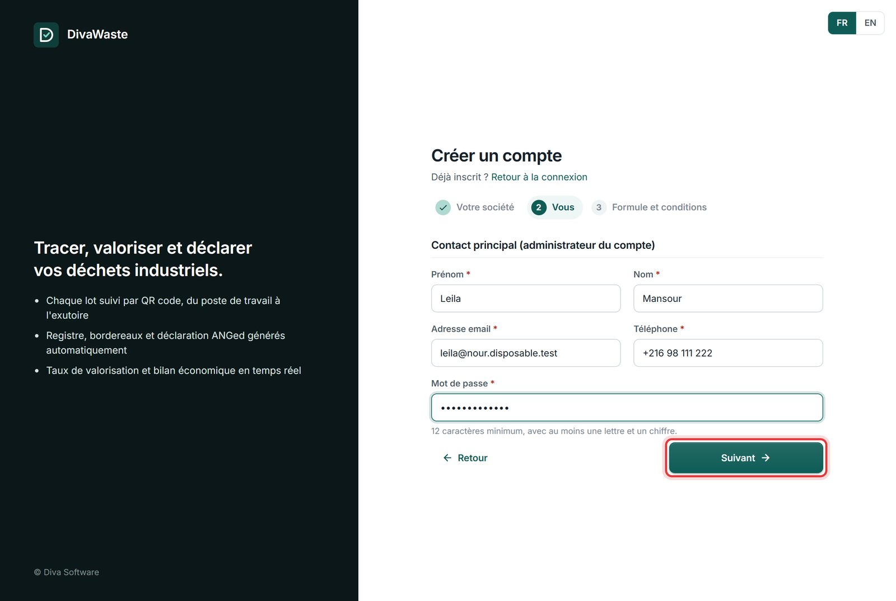
Bon à savoir. Vous devenez l'administrateur du compte : c'est vous qui inviterez ensuite vos collègues.
A4Formule, conditions, et c'est créé
Formule : « Essai gratuit 30 jours » est choisi d'office. Toutes les formules commencent par 30 jours gratuits, sans paiement.
Cochez J'ai lu et j'accepte (vous pouvez ouvrir « Lire les documents »).
Cliquez sur Créer mon compte.
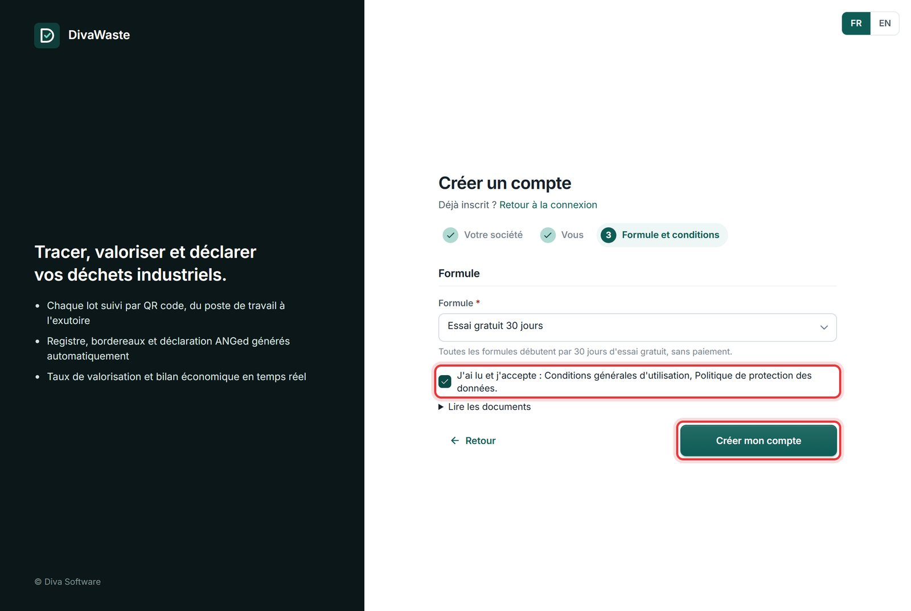
✔ Vous devez voir « Vérifiez votre boîte mail », avec votre adresse email. Sur le serveur de démonstration, vous voyez plutôt « Votre compte est prêt » : voir la page « Mode test », juste après A6.
DivaWaste · Guide 1 — Créer votre compte
A5Confirmez votre adresse email
Ouvrez votre messagerie : un email de DivaWaste contient un lien de confirmation, valable 24 heures.
Cliquez sur le lien. La page « Adresse email confirmée » s'ouvre.
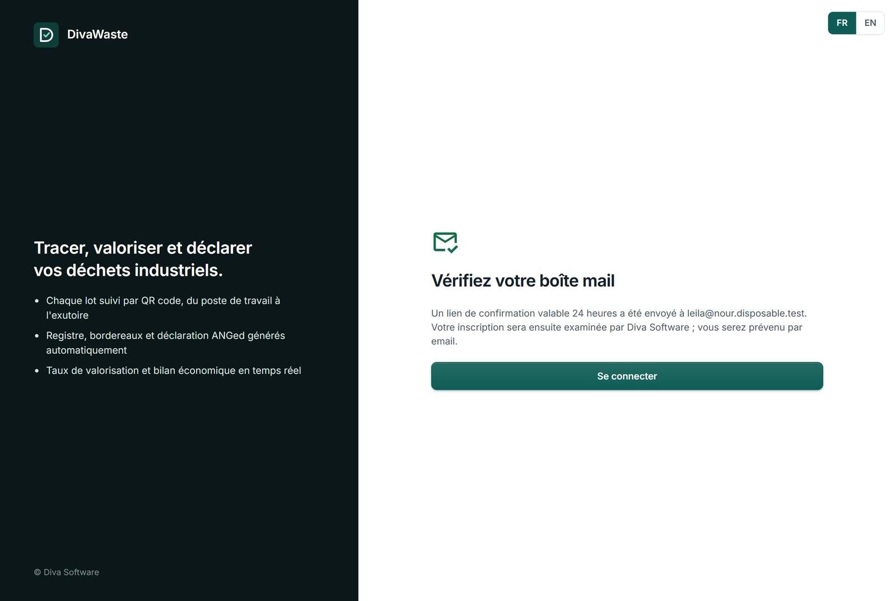
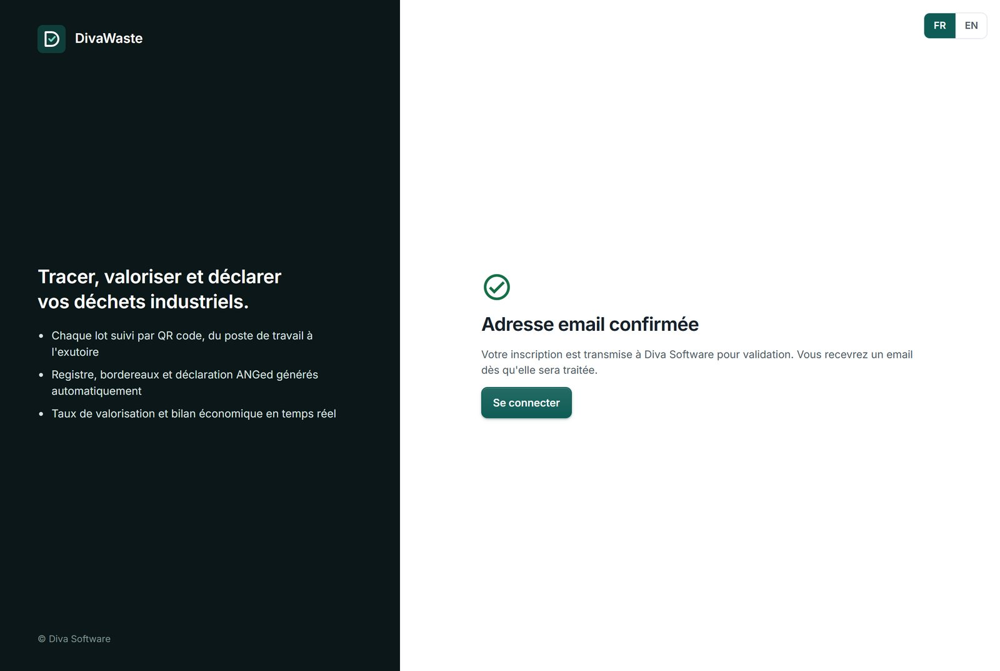
À gauche : juste après la création. À droite : après le clic sur le lien de l'email.
Pas d'email ? Regardez dans les courriers indésirables (spam). Le lien a expiré ? Connectez-vous : la page « État de votre compte » propose le bouton Renvoyer le lien.
A6Diva Software valide votre inscription
Cliquez sur Se connecter, saisissez votre email et votre mot de passe.
Tant que Diva Software n'a pas validé la société, vous voyez « En attente de validation ». Vous êtes prévenu par email quand c'est fait.
Une fois l'email reçu, cliquez sur Actualiser (ou reconnectez-vous).
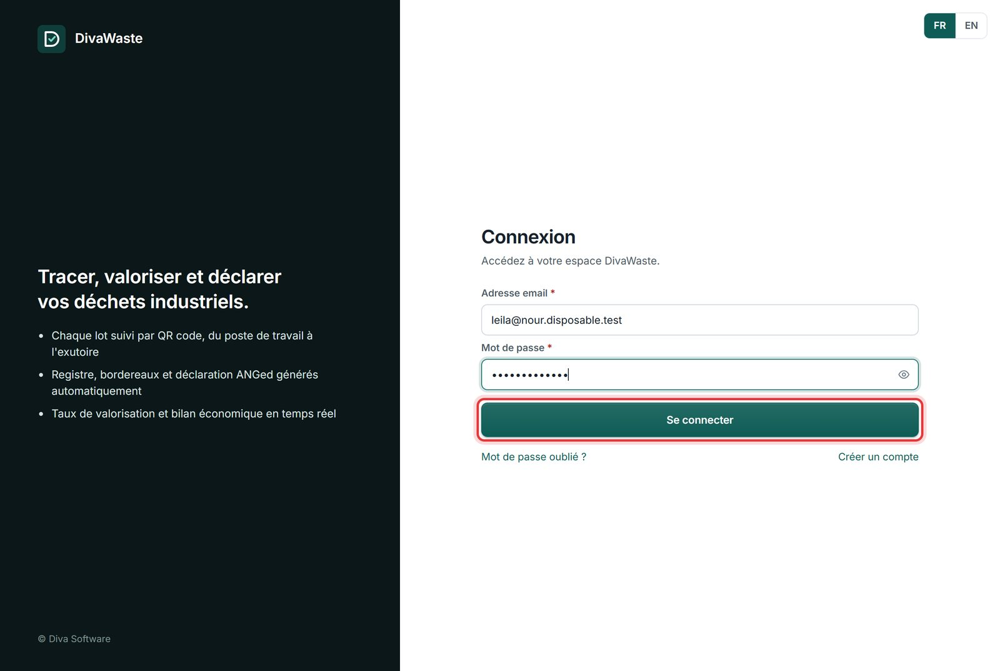
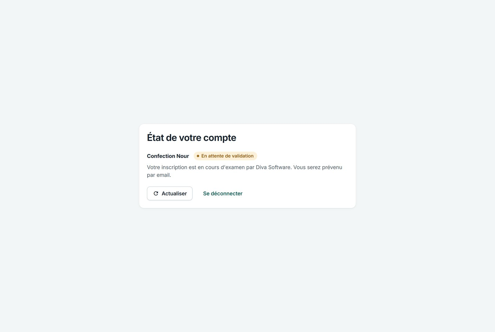
✔ Vous devez voir le tableau de bord « Bonjour [votre prénom] », avec la carte de l'assistant « Étape 1 sur 7 ».
DivaWaste · Guide 1 — Créer votre compte
⚡Mode test : le compte est prêt tout de suite
Sur le serveur de démonstration, Diva Software a allumé le mode test : l'email est tenu pour confirmé et l'inscription validée d'office. A5 et A6 sont sautées : pas d'email à attendre, pas de validation.
Après Créer mon compte, la page affiche « Votre compte est prêt ».
Se connecter avec l'email et le mot de passe choisis en A3 : le tableau de bord s'ouvre directement, avec « Terminez la mise en route ».
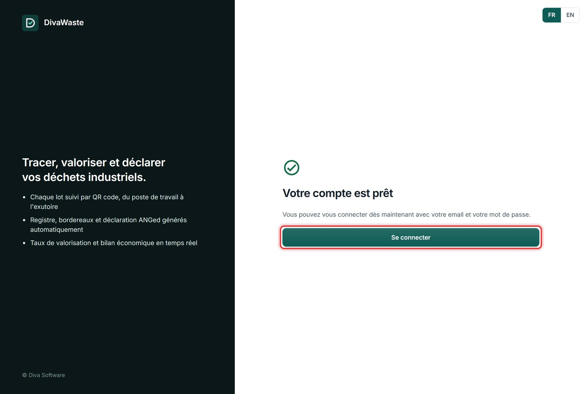
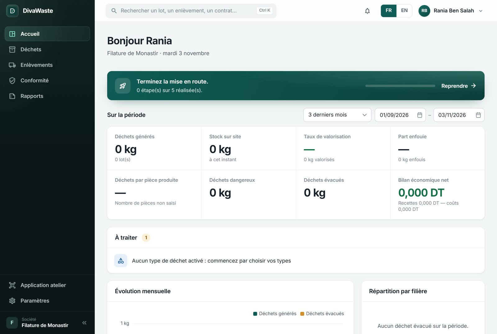
À gauche : juste après la création. À droite : la première connexion, sans attente.
Une adresse inventée suffit en mode test (aucun email n'est envoyé pour la confirmer). Pour inviter vos collègues de la même façon, voir le Guide 7 (« Copier le lien »). Avec de vrais clients, le mode test est éteint : A5 et A6 s'appliquent.
DivaWaste · Guide 1 — Créer votre compte
B. La mise en route, avec l'assistant virtuel
1Votre façon de travailler
Sur le tableau de bord, la carte de l'assistant (le petit robot) annonce l'étape 1. Cliquez sur son bouton Aller à : Accueil › Mise en route.
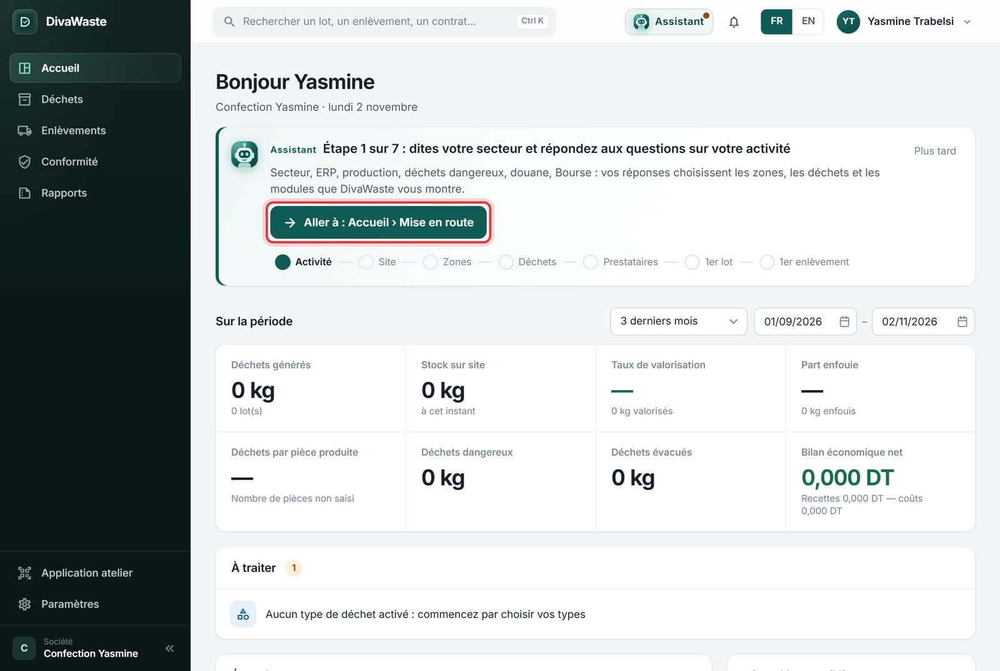
Votre secteur est déjà choisi : c'est celui donné à l'inscription (ici Textile et habillement). Vérifiez-le ; changez-le si besoin d'un clic.
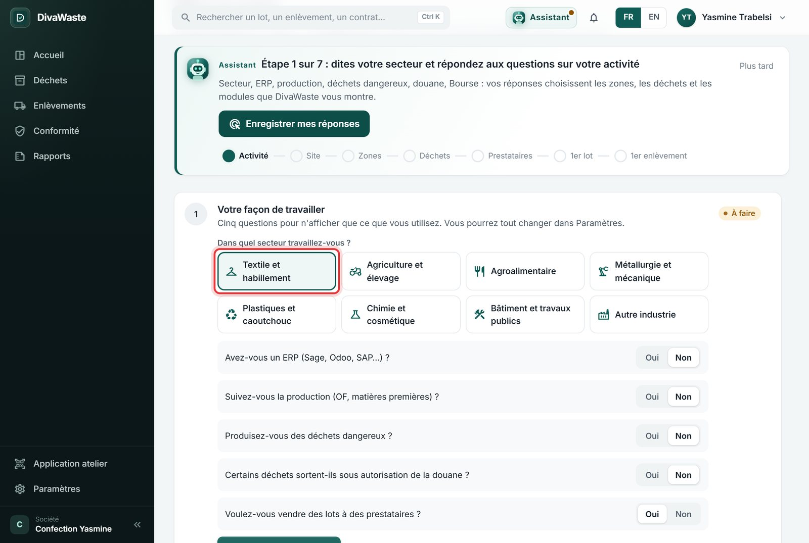
DivaWaste · Guide 1 — Créer votre compte
Répondez ensuite aux cinq questions. Pour une entreprise sans ERP et sans suivi de production :
Question
Réponse
Pourquoi
Avez-vous un ERP (Sage, Odoo, SAP…) ?
Non
Vous saisissez ou importez vos déchets directement dans DivaWaste.
Suivez-vous la production (OF, matières premières) ?
Non
Le menu « Production » est masqué : l'écran reste simple.
Produisez-vous des déchets dangereux ?
Non *
* Oui si vous avez des solvants, huiles, résidus de teinture… : DivaWaste vous demandera leurs codes et autorisations.
Certains déchets sortent-ils sous autorisation de la douane ?
Non *
* Oui si vous travaillez sous régime douanier (entreprise totalement exportatrice).
Voulez-vous vendre des lots à des prestataires ?
Oui
Ouvre la « Bourse » pour vendre vos chutes valorisables (partie E).
Cliquez sur Enregistrer mes réponses.
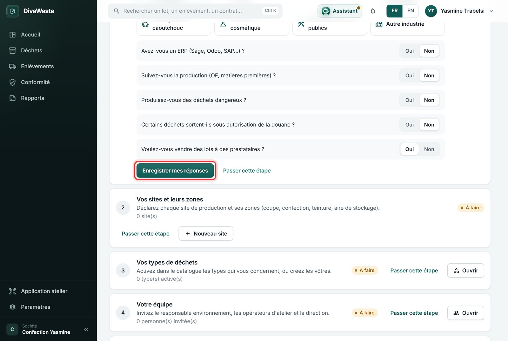
✔ Vous devez voir l'étape 1 marquée Terminé ; à gauche, pas de menu « Production » (il n'apparaît que si vous suivez la production) ; l'assistant écrit « Vos réponses sur votre activité sont enregistrées » et passe à l'étape 2 sur 7.
Changer d'avis ? Bouton Modifier sur cette étape, ou Paramètres › Modules et fonctionnement (partie C). Rien n'est figé.
DivaWaste · Guide 1 — Créer votre compte
2Votre site et ses zones
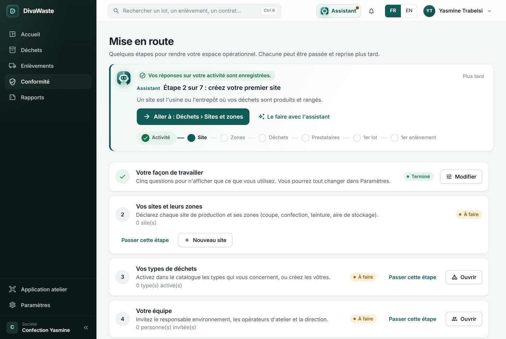
Un site est l'usine ou l'entrepôt où vos déchets naissent et sont rangés. Une zone est un endroit du site : un atelier (coupe, confection…) ou l'aire de stockage des déchets.
Dans la carte de l'assistant, cliquez sur Aller à : Déchets › Sites et zones, puis sur Nouveau site.
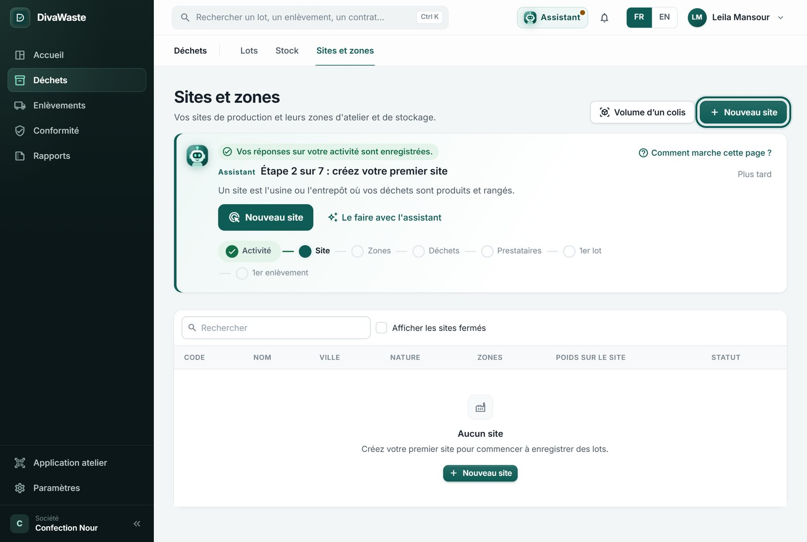
DivaWaste · Guide 1 — Créer votre compte
Code : un nom court pour reconnaître le site (ici « MON » pour Monastir). Nom : en clair (« Usine de Monastir »).
Nature : « Production » pour une usine, « Entrepôt » pour un dépôt, « Mixte » si le site fait les deux.
Adresse, Ville, Code postal.
Identifiant réglementaire : le numéro que l'administration a donné à ce site (autorisation d'exploitation…). Vous ne l'avez pas ? Laissez vide : il pourra être ajouté plus tard.
Zones à créer avec le site : l'Aire de stockage déchets est toujours créée. Cliquez sur une zone pour la cocher ou la décocher : gardez seulement les ateliers où naissent vos déchets (ici Confection ; « Coupe », cochée d'office, a été décochée).
Cliquez sur Enregistrer.
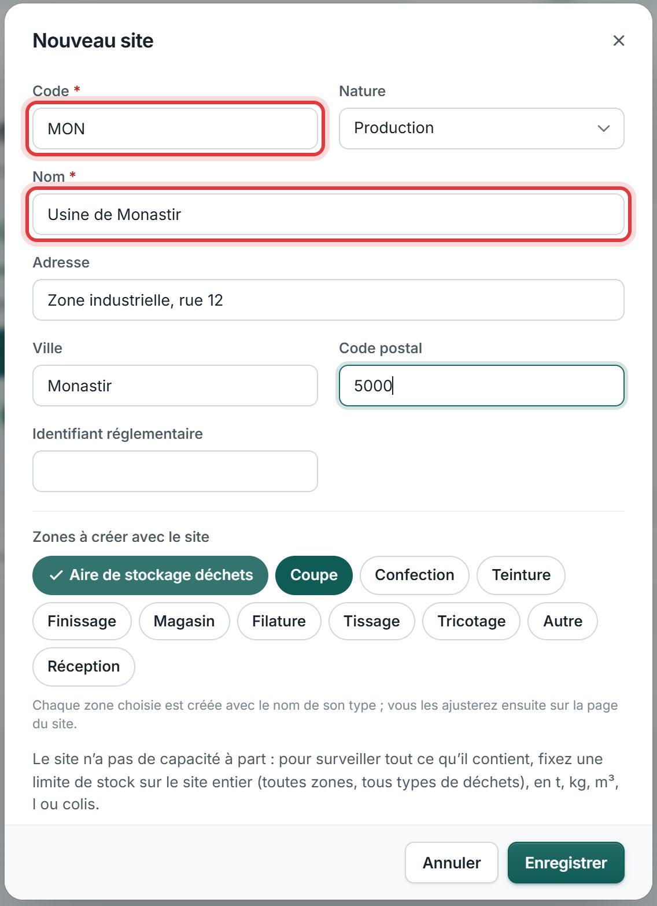
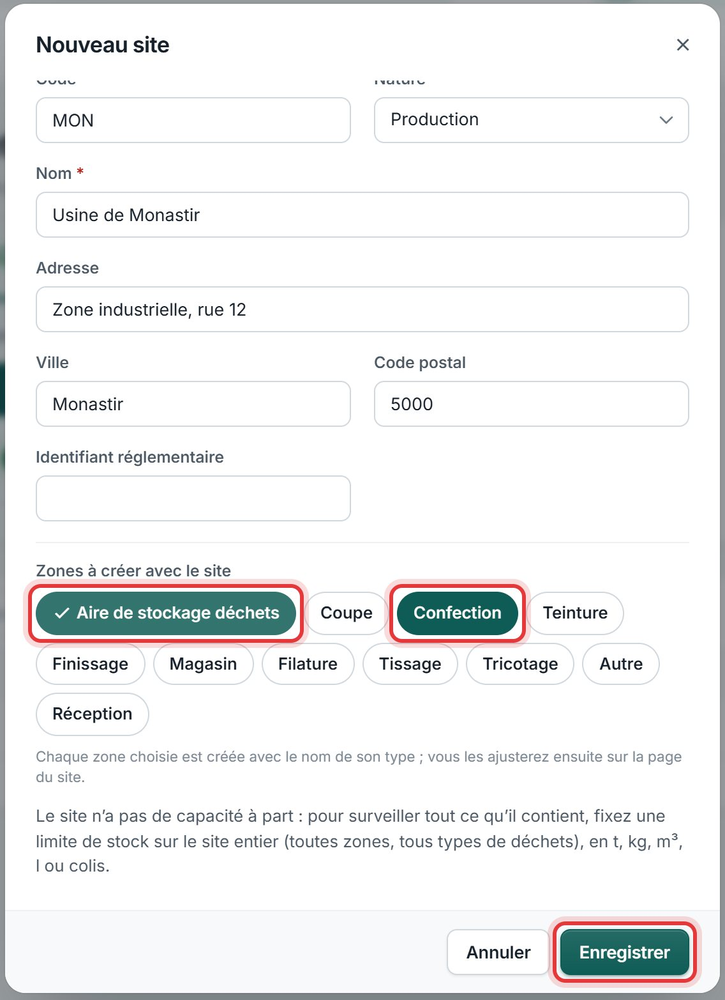
À gauche : le site. À droite : les zones choisies, puis « Enregistrer ».
DivaWaste · Guide 1 — Créer votre compte
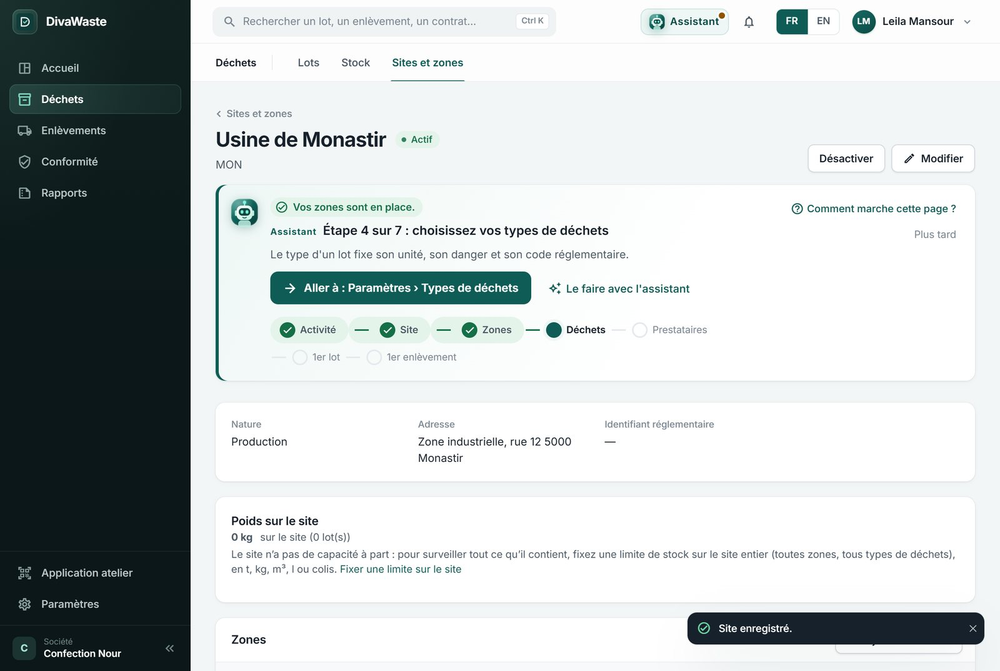
✔ Vous devez voir la page « Usine de Monastir » ; l'assistant écrit « Vos zones sont en place » et passe directement à l'étape 4 sur 7 (le site et ses zones comptent pour deux étapes) ; plus bas, la liste des zones :
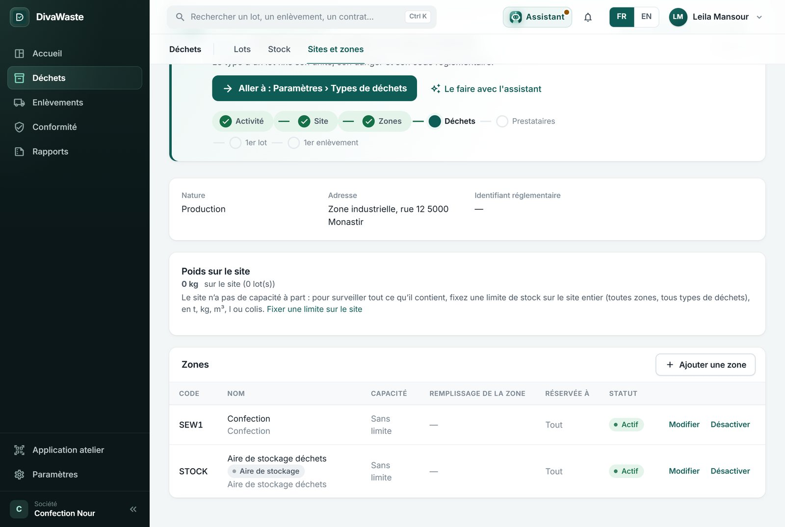
Un autre atelier ?Ajouter une zone. Une autre usine ? Nouveau site. Limiter la place d'une zone : voir les informations complémentaires (+3).
DivaWaste · Guide 1 — Créer votre compte
3Vos types de déchets
Le type d'un déchet fixe son unité (kg…), s'il est dangereux, et son code réglementaire — celui des bordereaux et de la déclaration annuelle. Le plus simple : les activer depuis le catalogue, où tout est déjà rempli.
Dans la carte de l'assistant, cliquez sur Aller à : Paramètres › Types de déchets.
Ouvrez l'onglet Catalogue de référence.
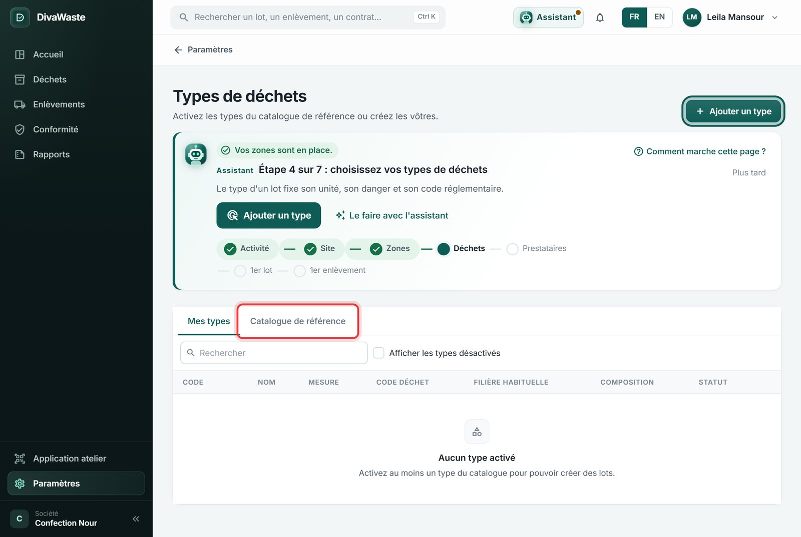
Cliquez sur Activer pour chacun de vos déchets (ici : Chutes de coupe, Cartons, Films et sacs plastique). Un clic suffit.
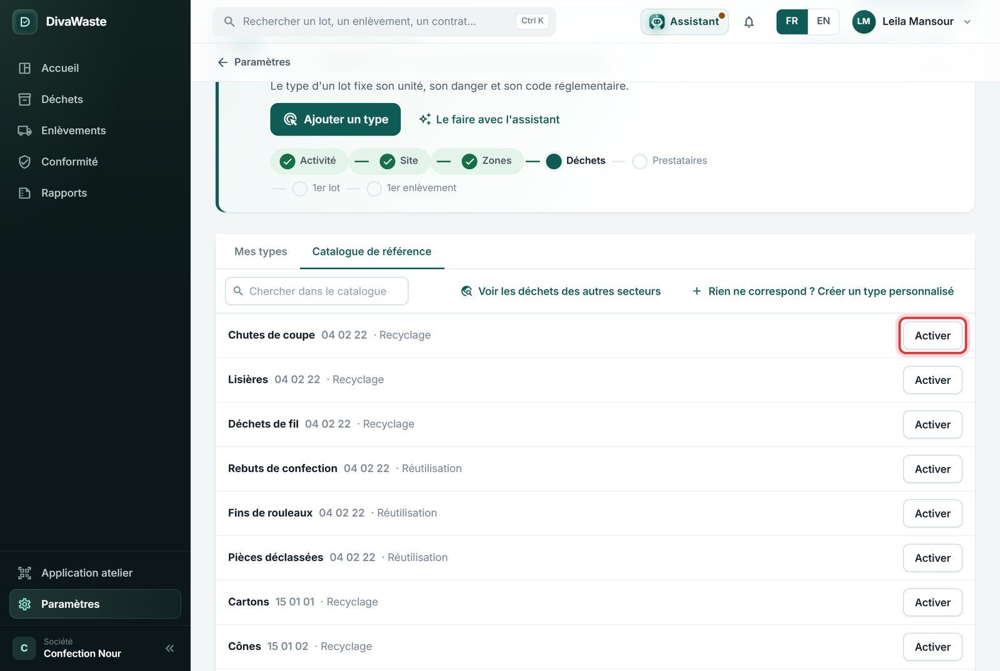
DivaWaste · Guide 1 — Créer votre compte
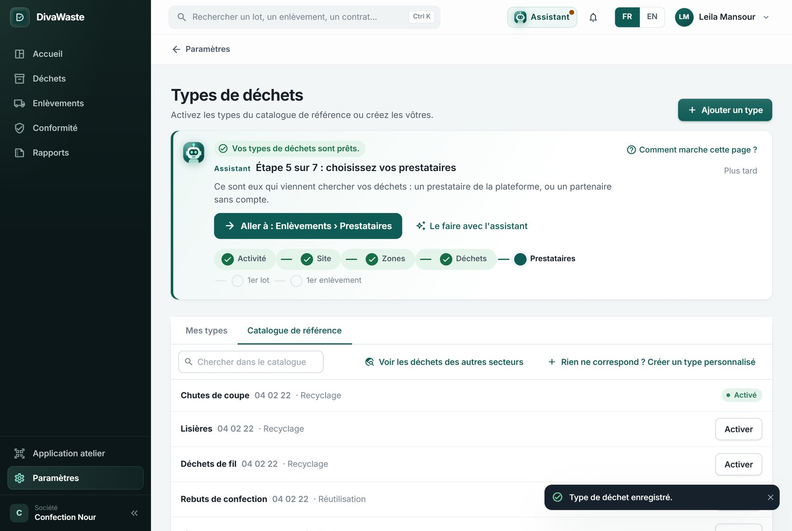
✔ Vous devez voir « Activé » sur la ligne ; dès le premier type, l'assistant écrit « Vos types de déchets sont prêts » et passe à l'étape 5 sur 7. Dans l'onglet Mes types, vos types activés, avec leur code :
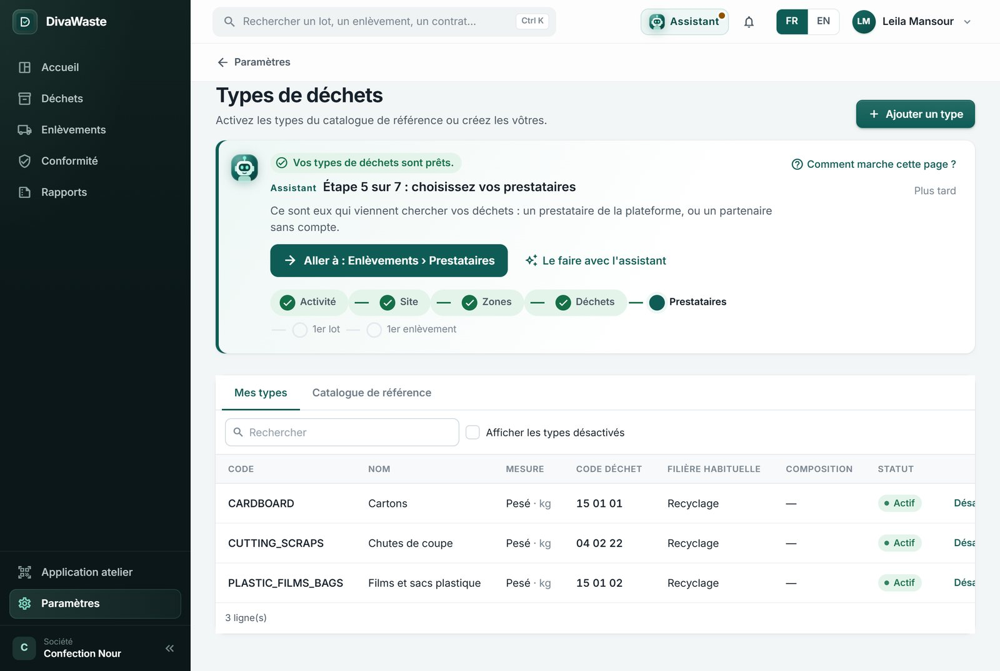
Rien ne correspond ? En haut du catalogue : « Rien ne correspond ? Créer un type personnalisé ». Un déchet d'un autre secteur ? « Voir les déchets des autres secteurs ».
DivaWaste · Guide 1 — Créer votre compte
4Votre prestataire
Le prestataire vient chercher vos déchets (collecteur, recycleur, transporteur). S'il est sur la plateforme, il confirme les enlèvements et signe les bordereaux en ligne.
Dans la carte de l'assistant, cliquez sur Aller à : Enlèvements › Prestataires. L'annuaire s'ouvre.
Choisissez votre prestataire et cliquez sur Ajouter à mes partenaires sur sa carte (ici : Recyclage du Sahel, à droite).
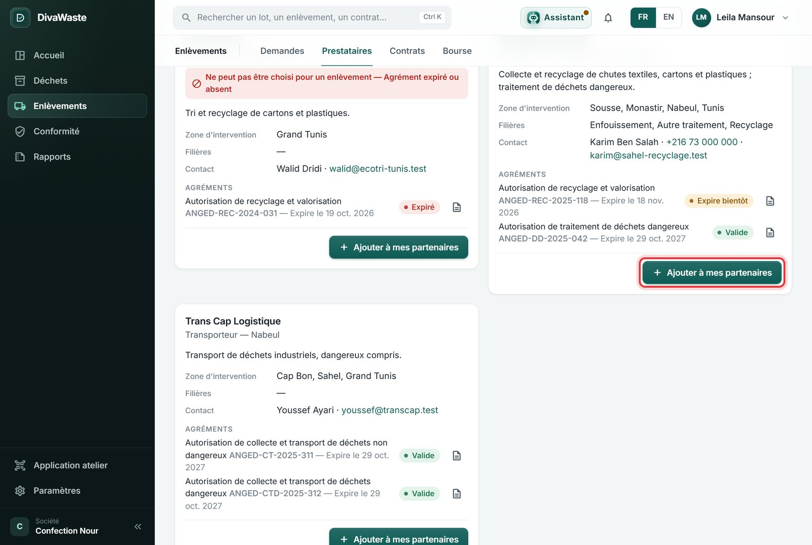
Attention. Un prestataire marqué en rouge « Ne peut pas être choisi pour un enlèvement — Agrément expiré ou absent » ne pourra pas enlever vos déchets tant que son agrément n'est pas à jour. Choisissez un prestataire dont les agréments sont « Valide ».
DivaWaste · Guide 1 — Créer votre compte
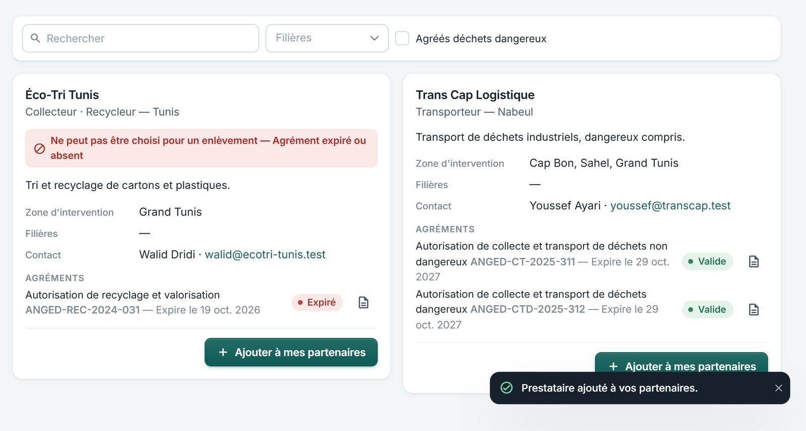
✔ Vous devez voir « Prestataire ajouté à vos partenaires » ; l'assistant passe à l'étape 6 sur 7 (votre premier lot). Sur l'onglet Mes prestataires, il apparaît avec le badge Partenaire.
Votre prestataire n'est pas sur la plateforme ? Voir les informations complémentaires (+1). Prix convenus avec lui ? (+2).
✓ Votre espace est en place
Société validée, activité décrite, site et zones, types de déchets, prestataire. Il reste les étapes 6 (premier lot) et 7 (premier enlèvement) : la partie D crée vos lots depuis Excel ; le premier enlèvement fera l'objet du prochain guide.
Votre équipe :Paramètres › Utilisateurs et rôles — invitez le responsable environnement, les opérateurs d'atelier, la direction (chacun avec son compte et ses droits).
DivaWaste · Guide 1 — Créer votre compte
C. Les ParamètresOù retrouver tous vos réglages
En bas du menu de gauche, cliquez sur Paramètres (la roue dentée).
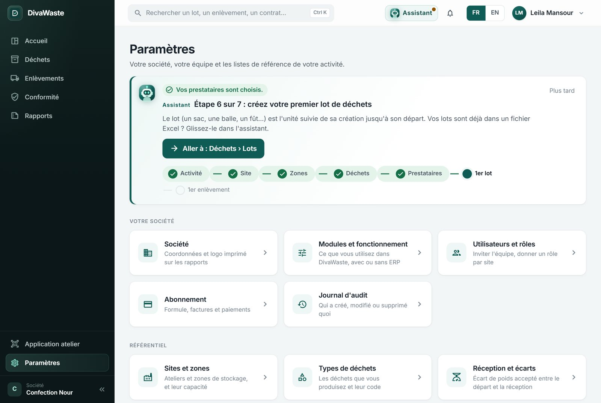
La page regroupe tout, en trois familles :
Famille
Ce que vous y trouvez
Votre société
Société (coordonnées, logo des rapports) · Modules et fonctionnement (avec ou sans ERP, modules affichés) · Utilisateurs et rôles · Abonnement · Journal d'audit (qui a fait quoi)
Référentiel
Sites et zones · Types de déchets · Réception et écarts (écart de poids accepté) · Conditionnements (volume d'un sac, d'une balle) · Couleurs
Données
Clés d'accès API — seulement si un jour vous reliez un logiciel à DivaWaste.
DivaWaste · Guide 1 — Créer votre compte
C1Allumer ou éteindre un module
Dans Paramètres, cliquez sur Modules et fonctionnement.
En haut, Comment travaillez-vous ? : « Sans ERP » est choisi (réponse de l'étape 1).
Plus bas, Modules : un interrupteur par module. Vert = affiché. Par exemple Bourse pour vendre vos lots (partie E), Production si un jour vous suivez vos OF.
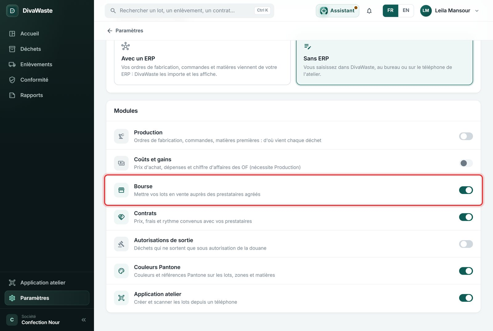
✔ Vous devez voir le menu changer aussitôt : un module éteint disparaît des menus et des formulaires. Rien n'est supprimé — rallumez-le à tout moment.
Plus vite : demandez à l'assistant « où sont les paramètres ? » ou « comment activer la Bourse ? » : il vous y emmène.
DivaWaste · Guide 1 — Créer votre compte
D. Importer vos lots depuis ExcelVotre registre entre d'un coup dans DivaWaste
Un lot est un sac, une balle, un bac de déchets, suivi de sa création jusqu'à son départ. Vous tenez déjà un registre dans Excel ? Une ligne = un lot. Il faut au moins le site et le type de déchet ; le reste est facultatif.
Date du lot
Site
Zone
Type de déchet
Poids (kg)
Votre référence du lot
26/10/2026
Usine de Monastir
Confection
Chutes de coupe
120
REG-0101
27/10/2026
Usine de Monastir
Confection
Chutes de coupe
95,5
REG-0102
28/10/2026
Usine de Monastir
Cartons
40
REG-0103
29/10/2026
Usine de Monastir
Films et sacs plastique
18
REG-0104
Le fichier utilisé pour ce guide (registre-lots.xlsx). Sans zone, le lot va dans l'aire de stockage du site.
D1Ouvrez l'import
Menu Déchets › Lots, puis le bouton Importer (en haut à droite).
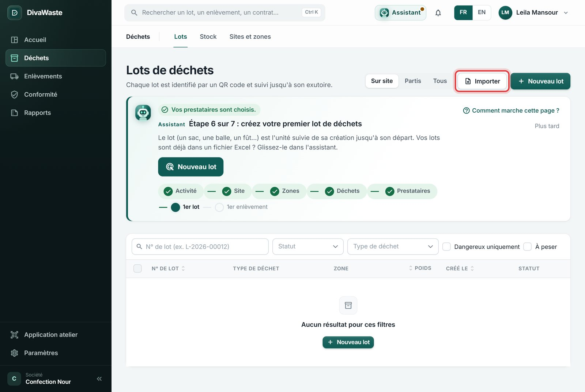
DivaWaste · Guide 1 — Créer votre compte
D2Choisissez le fichier
Cliquez sur Choisir le fichier et prenez votre Excel (ou CSV). La première ligne doit contenir les titres des colonnes.
Pas de registre ? Télécharger un modèle vide, remplissez-le, puis revenez.
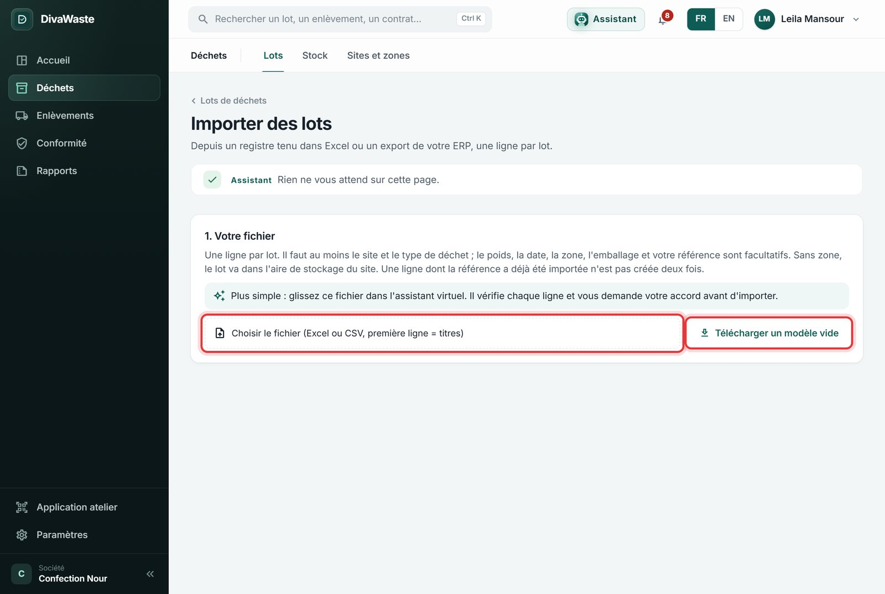
D3Vérifiez les colonnes
DivaWaste retrouve seul la colonne de chaque information (ici : Site, Zone, Type de déchet, Poids, Date, Référence). Une colonne mal reconnue ? Choisissez-la dans la liste. Les informations que votre fichier n'a pas restent « Absente du fichier ».
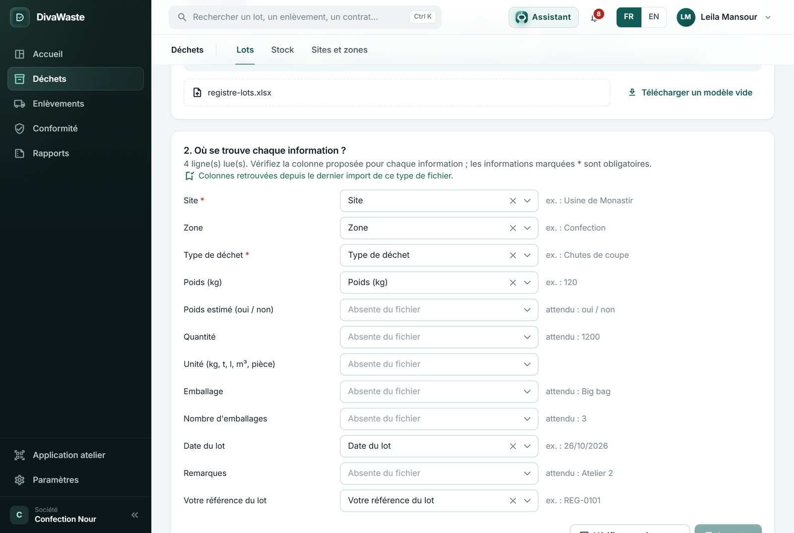
DivaWaste · Guide 1 — Créer votre compte
D4Vérifiez, puis importez
Vérifier sans importer : DivaWaste lit tout sans rien créer et dit ce qu'il fera (« 4 à créer »). Une ligne en erreur est expliquée.
Importer : les lots sont créés.
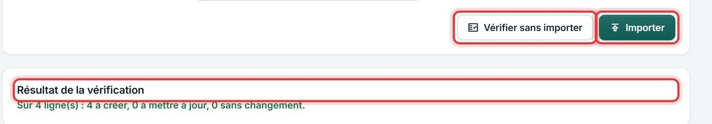
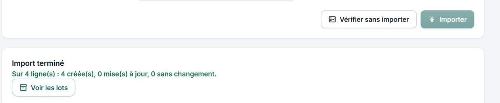
À gauche : le résultat de la vérification. À droite : « Import terminé — 4 créée(s) ».
✔ Vous devez voir « Import terminé ». Cliquez sur Voir les lots : vos 4 lots, chacun avec son numéro L-2026-…, sa zone et son poids. L'assistant passe à l'étape 7 sur 7.
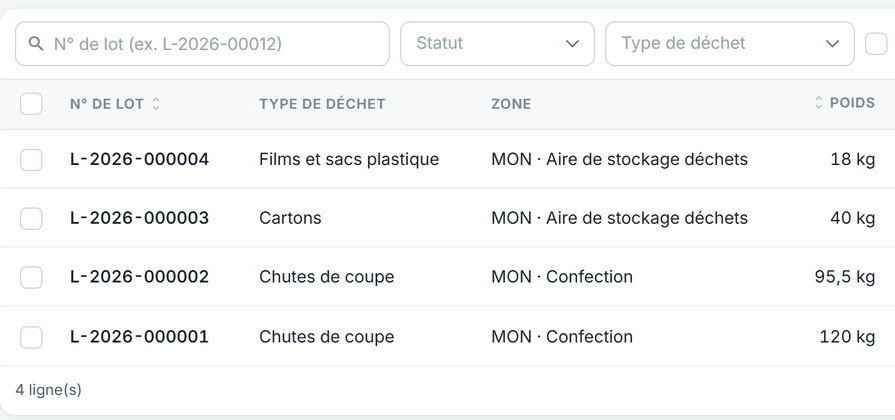
Importer deux fois le même fichier ? Sans danger : une ligne dont « Votre référence du lot » a déjà été importée n'est pas créée deux fois.
DivaWaste · Guide 1 — Créer votre compte
D5Encore plus simple : avec l'assistant virtuel
Ouvrez l'assistant (bouton Assistant en haut, ou Ctrl + J).
Glissez votre fichier Excel dans sa fenêtre (ou le trombone 📎).
Il lit chaque ligne et propose « Importer 4 lots ». Colonnes lues montre ce qu'il a compris. Rien n'est créé tant que vous ne cliquez pas sur Confirmer.
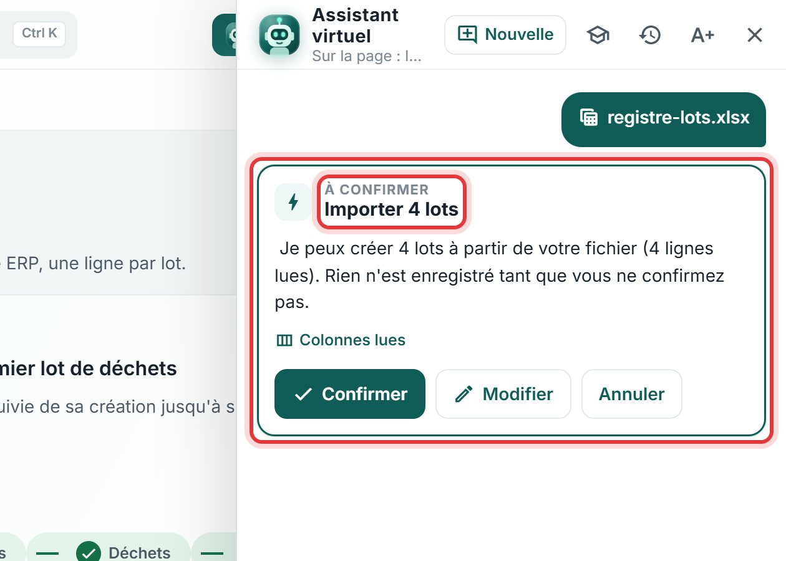
✔ Vous devez voir après « Confirmer » : le nombre de lots créés, et les lignes écartées avec la raison (type de déchet inconnu, site introuvable…).
DivaWaste · Guide 1 — Créer votre compte
E. Mettre un lot en BourseVendre vos chutes valorisables aux prestataires agréés
Avant : la Bourse doit être allumée — réponse « Oui » à « Voulez-vous vendre des lots ? » (étape 1), ou Paramètres › Modules et fonctionnement › Bourse (partie C1).
E1Ouvrez le lot
Déchets › Lots, cliquez sur le numéro du lot (ici L-2026-000001, Chutes de coupe, 120 kg).
En haut à droite : Plus d'actions › Mettre en vente.
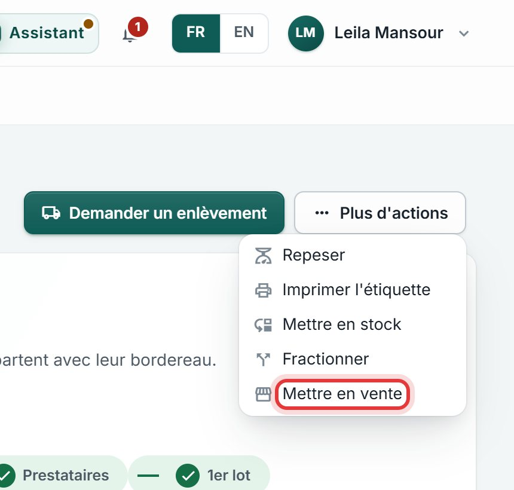
E2Décrivez l'annonce
Titre : déjà rempli (type, poids, site). Description : l'état, le tri, l'accès au site.
Prix demandé (facultatif) : cochez la case, puis le montant — ici 60 TND par tonne, « Je reçois ». Sans prix, les preneurs font leur offre.
Conditions (facultatif) : dès quand le lot peut être enlevé, date de clôture des offres.
Cliquez sur Publier.
DivaWaste · Guide 1 — Créer votre compte
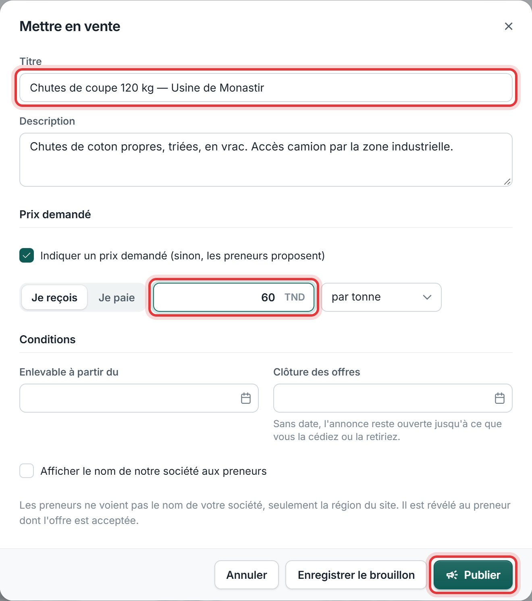
Discrétion. Les preneurs ne voient pas le nom de votre société, seulement la région du site — sauf si vous cochez « Afficher le nom de notre société ». Le nom est révélé au preneur dont l'offre est acceptée.
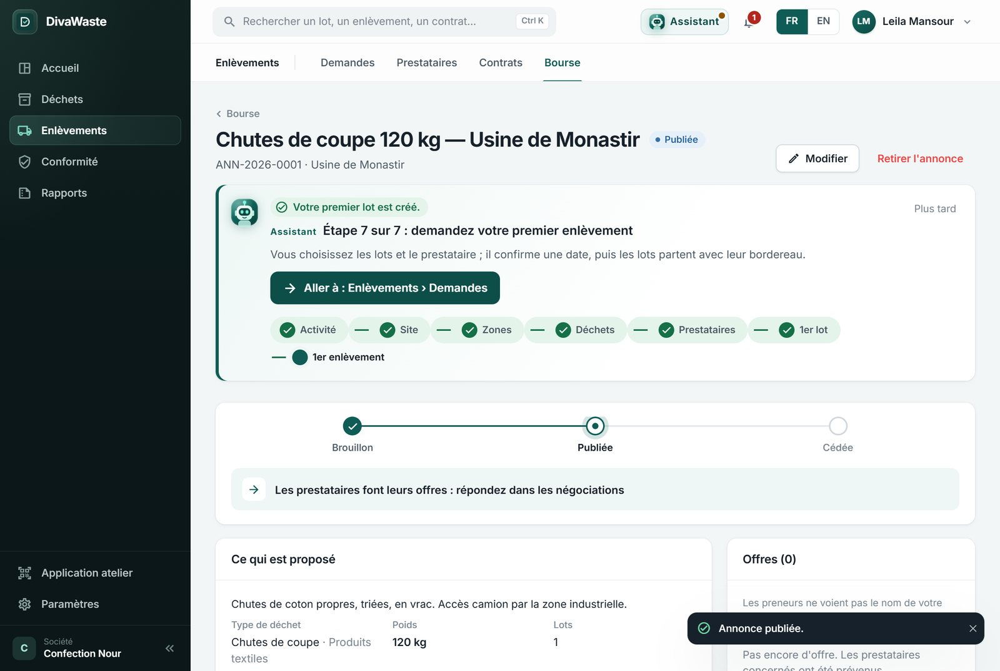
✔ Vous devez voir l'annonce ANN-2026-0001 au statut Publiée, dans Enlèvements › Bourse. Les prestataires concernés sont prévenus ; leurs offres arrivent à droite (« Offres »). Vous pouvez Modifier ou Retirer l'annonce.
DivaWaste · Guide 1 — Créer votre compte
+ Informations complémentairesFacultatif — quand vous en avez besoin
+1Un prestataire sans compte sur la plateforme
Votre collecteur, transporteur ou recycleur n'utilise pas DivaWaste ? Enregistrez-le vous-même. Vous saisirez ses étapes à sa place, et il signera le bordereau à la main.
Enlèvements › Prestataires, bloc Partenaires sans compte : Ajouter un partenaire.
Raison sociale, puis Activités : Collecteur, Transporteur, Recycleur et/ou Trieur. Un collecteur vient chercher les déchets et les reçoit : pas besoin d'un transporteur en plus.
Coordonnées (facultatif) : matricule, adresse, contact, n° d'autorisation et sa date d'expiration. Puis Enregistrer.
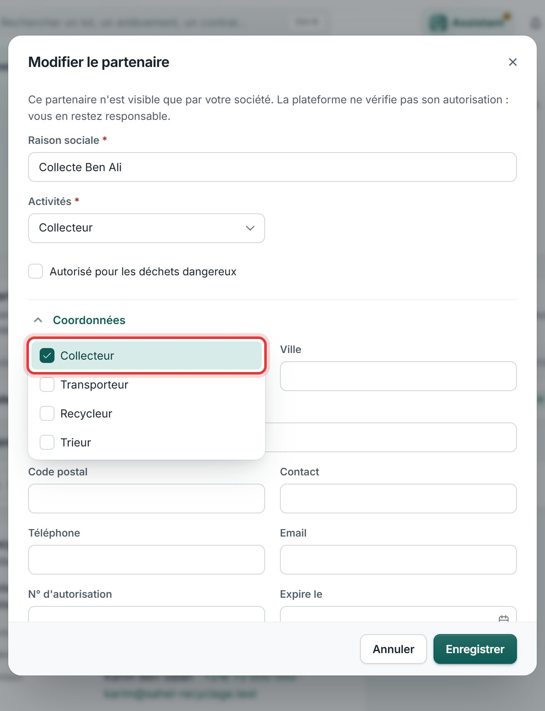
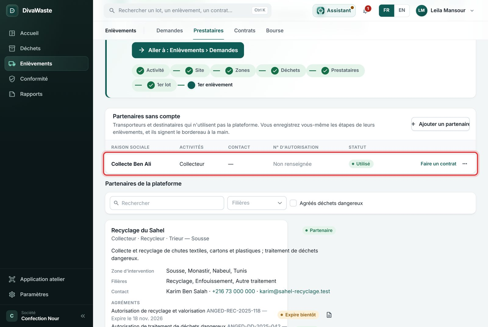
À gauche : les activités possibles. À droite : le partenaire dans la liste « Partenaires sans compte ».
Votre responsabilité. La plateforme ne vérifie pas l'autorisation d'un partenaire sans compte. Pour des déchets dangereux, saisissez son n° d'autorisation et sa date d'expiration.
DivaWaste · Guide 1 — Créer votre compte
+2Un contrat avec votre prestataire
Le contrat garde ce que vous avez convenu : les prix, le rythme des enlèvements, la durée. Ses prix sont appliqués à chaque réception.
Enlèvements › Prestataires : bouton Faire un contrat sur la carte du prestataire (ou Enlèvements › Contrats). Trois écrans :
Qui et quand : l'objet (« Collecte et recyclage des chutes et cartons »), le prestataire, la date de début (la fin est facultative). Suivant.
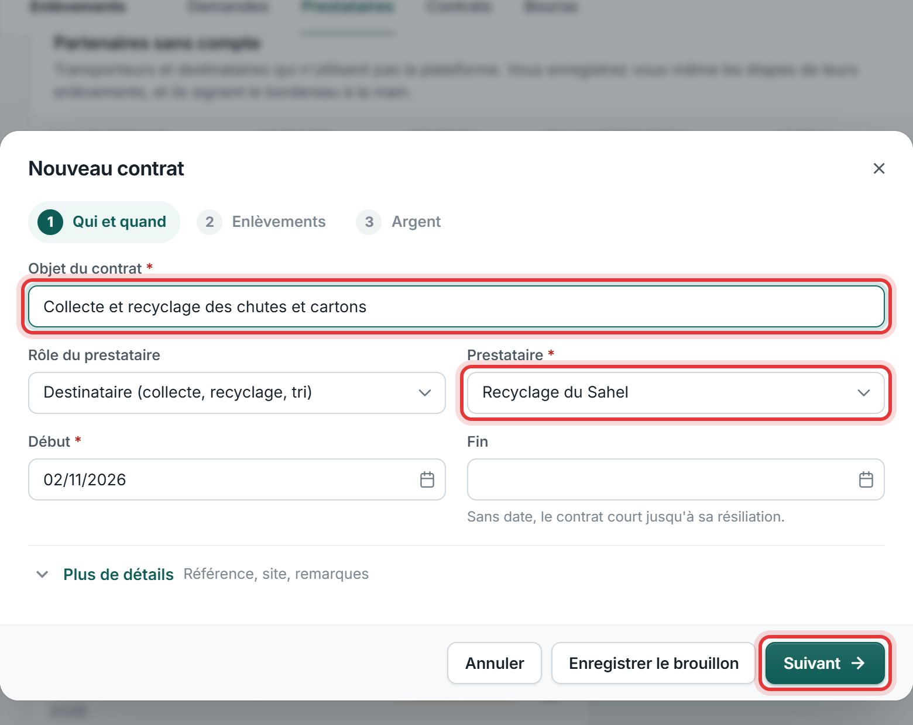
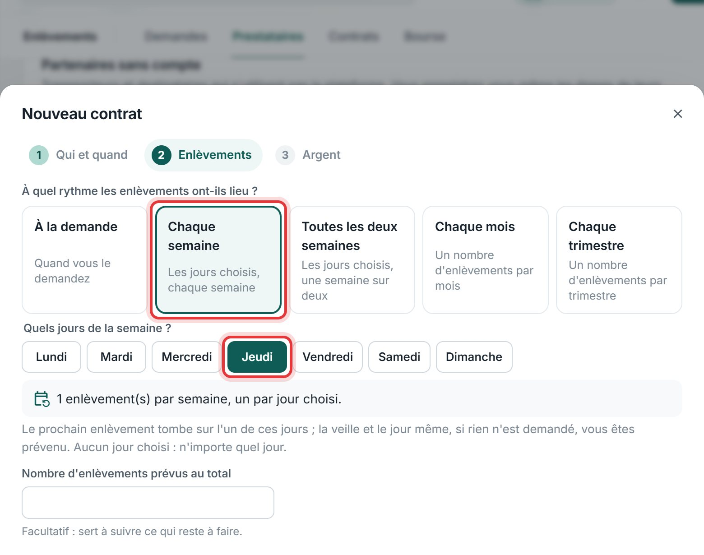
Enlèvements : le rythme — à la demande, chaque semaine (ici le jeudi), chaque mois… Suivant.
Argent : « Au poids des déchets », un prix par type — ici Chutes de coupe, Je reçois 150 TND par tonne. Des frais en plus (benne, pesée) ? Ajouter un frais.
Cliquez sur Enregistrer et mettre en vigueur.
DivaWaste · Guide 1 — Créer votre compte
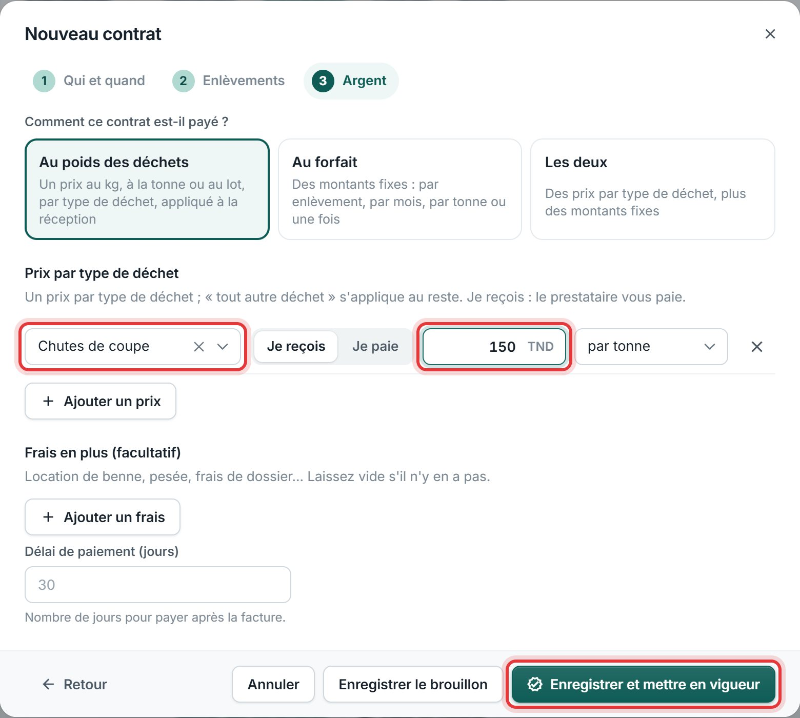
✔ Vous devez voir le contrat CTR-2026-0001 « En vigueur », avec le prochain enlèvement prévu (le jeudi suivant) et le bouton Demander le prochain enlèvement.
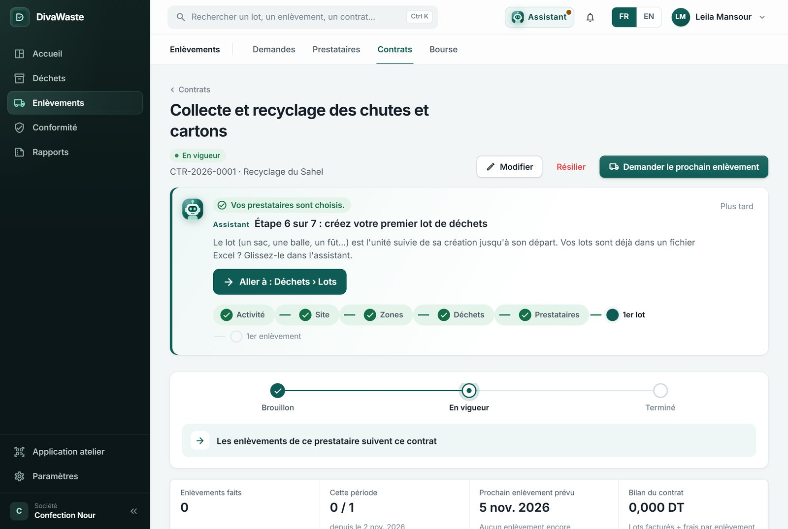
DivaWaste · Guide 1 — Créer votre compte
+3Les limites d'une zone
DivaWaste peut vous prévenir avant que l'aire de stockage soit pleine.
Déchets › Sites et zones, ouvrez le site, puis Modifier sur la ligne de la zone (ici « Aire de stockage déchets »).
Capacité : « Place mesurée en » Volume (m³) (ou en nombre de colis), puis le volume de la zone — ici 20 m³.
Plus de détails (facultatif) : la charge maximale en kg (ici 3000), l'alerte à 90 % de la capacité, et les déchets auxquels la zone est réservée. Puis Enregistrer.
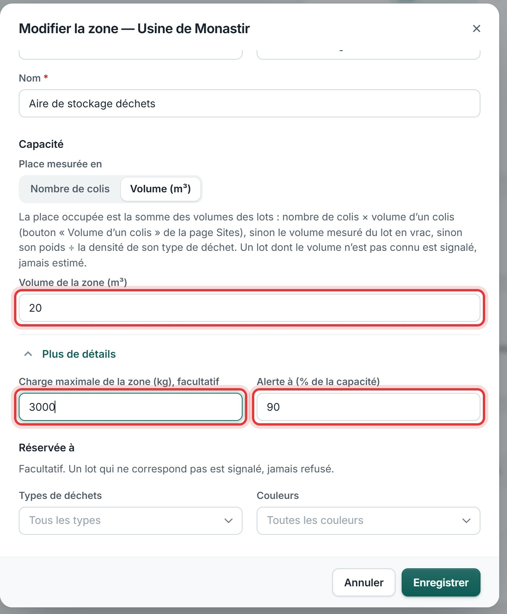
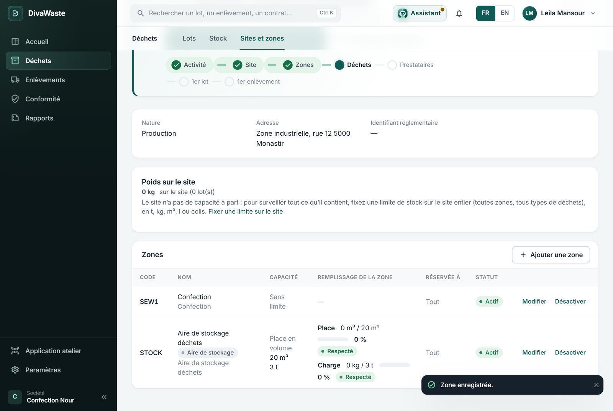
À gauche : la zone limitée à 20 m³ et 3 t. À droite : son remplissage dans la liste des zones.
✔ Vous devez voir dans la colonne Remplissage de la zone : « Place 0 m³ / 20 m³ » et « Charge 0 kg / 3 t », avec « Respecté ». Passé 90 % de la capacité, la zone est signalée en alerte.
Tout le site ? Le site n'a pas de capacité à part : « Fixer une limite sur le site » (sur la page du site) surveille tout ce qu'il contient, en t, kg, m³, l ou colis.
DivaWaste · Guide 1 — Créer votre compte
Fiche de test
Cochez chaque résultat obtenu, notez ce qui a gêné.
Étape
Résultat attendu
☐
A2 Société
Le secteur est demandé ; « Vos métiers du textile » n'apparaît que pour le textile ; un champ manquant est signalé en rouge.
☐
A3–A4
Mot de passe trop court refusé ; « Créer mon compte » demande d'accepter les conditions.
☐
A5–A6
L'email arrive ; le lien confirme ; « En attente de validation », puis le tableau de bord. En mode test : « Votre compte est prêt » et connexion directe.
☐
1 Activité
Le secteur de l'inscription est déjà choisi ; « Terminé » ; pas de menu Production, ni avant ni après les réponses.
☐
2 Site et zones
Le site s'ouvre avec ses zones, dont une seule « Aire de stockage déchets ».
☐
3 Types
« Activé » en un clic ; « Mes types » les liste avec leur code.
☐
4 Prestataire
« Partenaire » sur sa carte ; l'assistant passe à l'étape 6.
☐
C Paramètres
Un module éteint disparaît du menu ; rallumé, il revient.
☐
D Import
« Vérifier » ne crée rien ; « Importer » crée les lots ; un second import ne les double pas.
☐
D5 Assistant
Le fichier glissé donne « Importer N lots » ; rien n'est créé avant « Confirmer ».
☐
E Bourse
L'annonce est « Publiée » ; le nom de la société reste caché.
☐
+1 Sans compte
Collecteur possible ; le partenaire apparaît dans « Partenaires sans compte ».
☐
+2 Contrat
« En vigueur », prochain enlèvement au bon jour.
☐
+3 Zone
« Place … / 20 m³ » et « Charge … / 3 t » dans la liste des zones.
☐
Assistant
Le robot et le nom « Assistant » partout ; sa carte dit l'étape et son bouton mène au bon endroit.